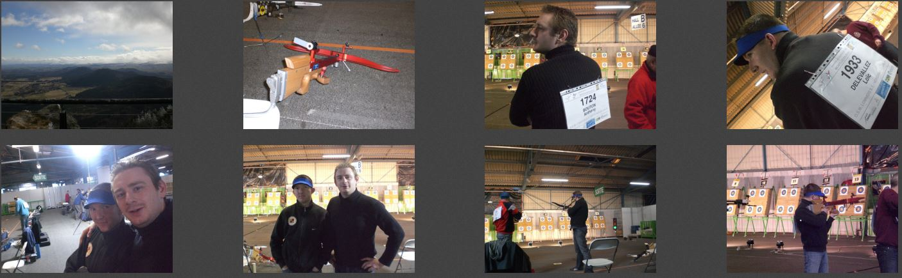
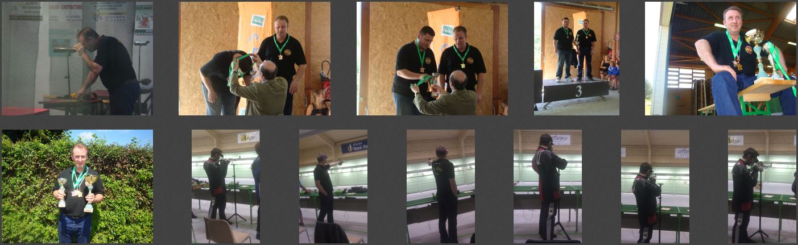
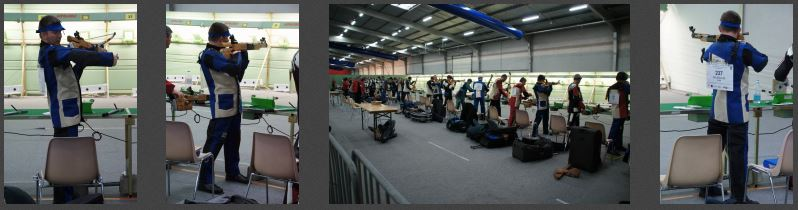

Ce jeudi 1 Avril 2010 se déroulé le match Arbalète Field S1, nous avons deux tireurs du club qui étaient présent: Anthony B. et Loïc D. Après une préparation physique intense Auvergnate: Ascension du Puy de Dôme, Dégustation Gastronomique de la Région, etc. Nos deux tireurs ont effectué un tir assez moyen (378/400 pour Loïc et 375/400 pour Anthony).
L'album photo:
Galerie photos de nos Champions lors du National Été 2011, organisé par le club de Arques (62) avec l'aide du club de Saint-Omer pour les installations 25M. De très belles performances pour l'OSML Tir, avec des champions et vice-champions National.
Les photos du Championnat sont présentes:
Ce Mardi 4 Février 2014 se déroulé le match Arbalète Match S1, un seul représentant pour l'OSM Lomme Tir: Loïc DELEVALLEZ. Il parvient à se classer à la 37ème place de ce Championnat de France avec un score de 560 points. Ce résultalt ne le qualifie pas pour les sélections National, mais il ne manque qu'une seule étape de CN pour valider ces matchs précédant, nous espèrons donc que Loïc puisse se qualifier grâce à ce système.
L'album photo:
